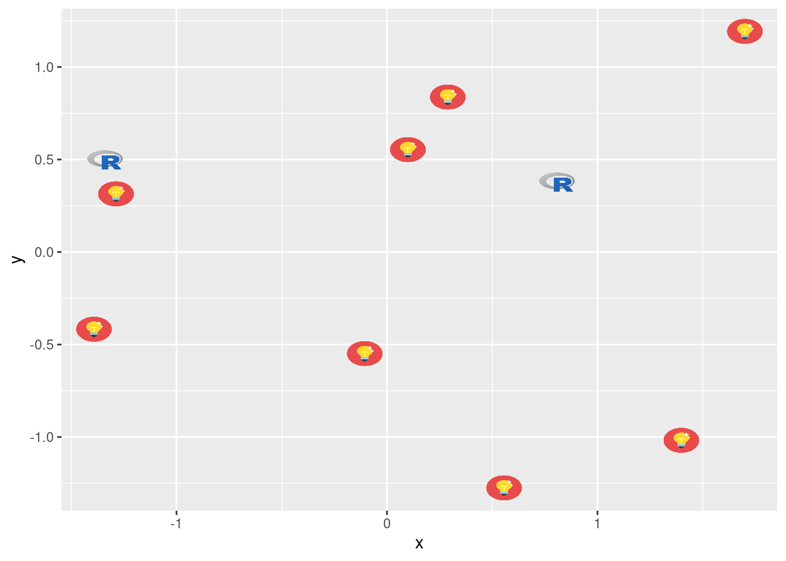
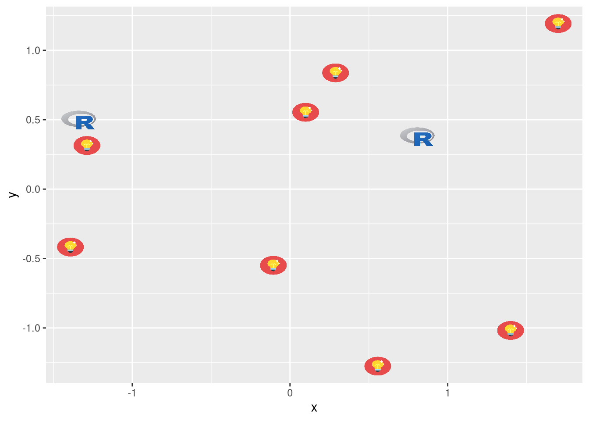
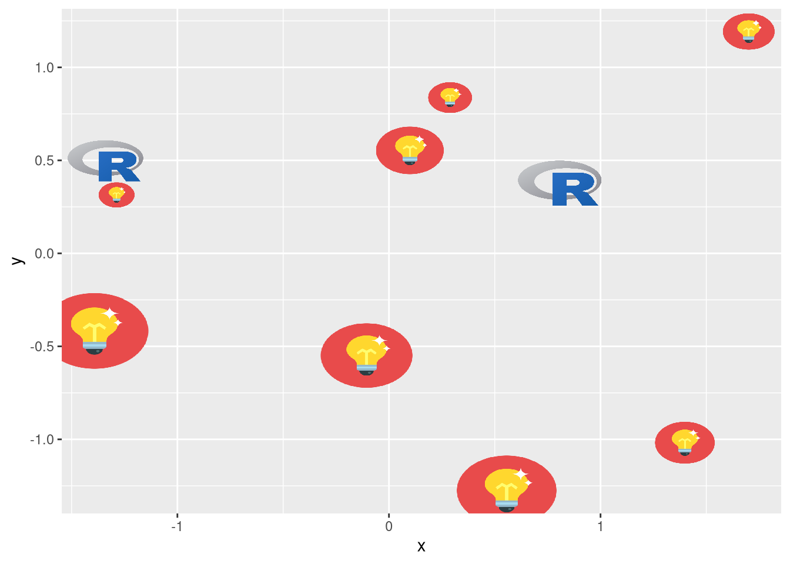
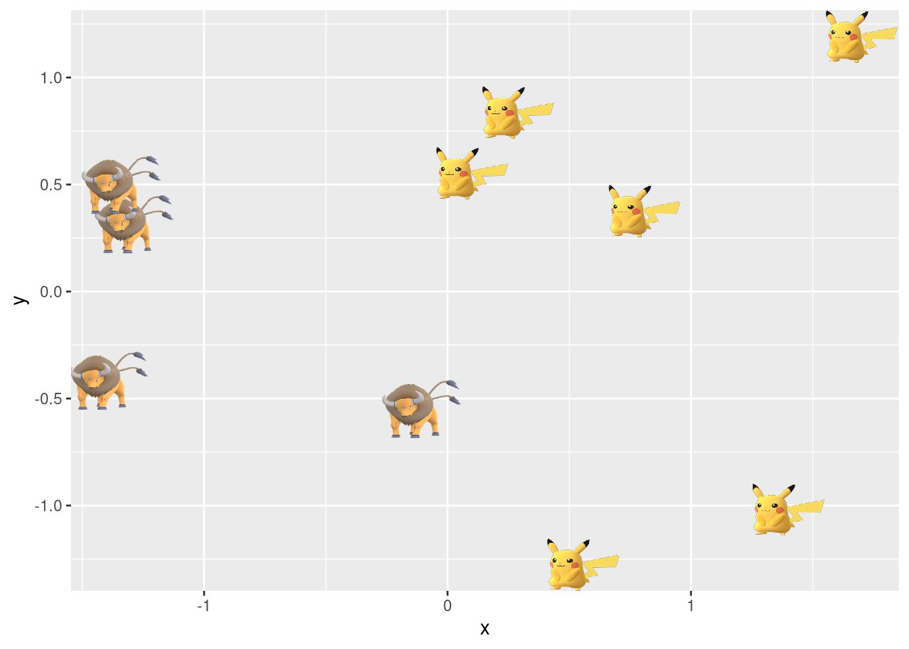
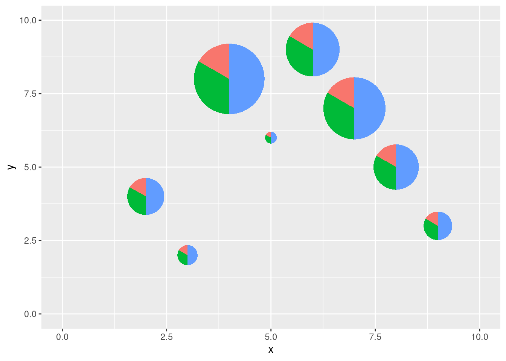

2 Use image in ggplot2
2.1 geom_image
library("ggplot2")
library("ggimage")
set.seed(2017-02-21)
img <- list.files(system.file("extdata", package="ggimage"),
pattern="png", full.names=TRUE)
d <- data.frame(x = rnorm(10),
y = rnorm(10),
image = sample(img, size=10, replace = TRUE)
)
ggplot(d, aes(x, y)) + geom_image(aes(image=image), size=.05)
ggplot(d, aes(x, y)) + geom_image(aes(image=image), size=.05, by='height')
ggplot(d, aes(x, y)) + geom_image(image=d$image[1])d$size=seq(.05, .15, length.out=10)
ggplot(d, aes(x, y)) + geom_image(aes(image=image, size=I(size)))
ggplot(d, aes(x, y)) + geom_image(aes(image=image), color="firebrick")2.2 geom_pokemon
ggplot(d, aes(x, y)) + geom_pokemon(aes(image=ifelse(x>0, 'pikachu', 'tauros')), size=.1)
2.3 geom_emoji
set.seed(123)
iris2 <- iris[sample(1:nrow(iris), 30),]
model <- lm(Petal.Length ~ Sepal.Length, data=iris2)
iris2$fitted <- predict(model)
ggplot(iris2, aes(x = Sepal.Length, y = Petal.Length)) +
geom_linerange(aes(ymin = fitted, ymax = Petal.Length),
colour = "purple") +
geom_abline(intercept = model$coefficients[1],
slope = model$coefficients[2]) +
geom_emoji(aes(image = ifelse(abs(Petal.Length-fitted) > 0.5, '1f622', '1f600')))2.4 geom_phylopic
Please visit https://yulab-smu.github.io/treedata-book/chapter8.html#phylopic for more details.
2.5 geom_flag
f <- system.file("extdata/medals.txt", package="ggimage")
medals <- read.table(f, header=TRUE)
p <- ggplot(medals, aes(Country, count)) + geom_col(aes(fill = medal), width = .8)
p + geom_flag(y = -2, aes(image = code)) +
coord_flip() + expand_limits(y = -2) +
scale_fill_manual(values = c("Gold" = "gold", "Bronze" = "#cd7f32", "Silver" = "#C0C0C0"))2.6 geom_icon
d$icon=sample(c('ios-power', 'ios-wifi', 'ios-pie'), 10, replace=TRUE)
ggplot(d, aes(x,y)) + geom_icon(aes(image=icon))see also https://ionicons.com/.
2.7 geom_subview
library(tibble)
dd <- data.frame(x=LETTERS[1:3], y=1:3)
pie <- ggplot(dd, aes(x=1, y, fill=x)) + geom_bar(stat="identity", width=1) + coord_polar(theta="y") +
theme_void() + theme(legend.position="none") + theme_transparent()
df <- tibble(x = sample(2:9),
y = sample(2:9),
width = sample(seq(0.5, 3, length.out=length(x))),
pie = list(pie))
p <- ggplot(data=data.frame(x=c(0, 10), y=c(0, 10)), aes(x, y))+geom_blank()
p + geom_subview(aes(x=x, y=y, subview=pie, width=width, height=width), data=df)
2.8 geom_twitchemote
set.seed(1)
x <- 1:10
y <- x + rnorm(10, sd = 1)
notlikethis <- data.frame(x = x, y = y)
n_pals <- 200
pals <- data.frame(
x = runif(n_pals, -2, 12), y = runif(n_pals, -2, 12),
pal = sample(c("wutface", "kappa", "pogchamp"), size = n_pals, replace = TRUE)
)
ggplot(notlikethis, aes(x = x, y = y)) +
geom_twitchemote(data = pals,
aes(image = 'pogchamp'), size = 0.03, alpha = 0.3) +
geom_twitchemote(aes(image = 'notlikethis'), size = 0.15) +
geom_smooth()